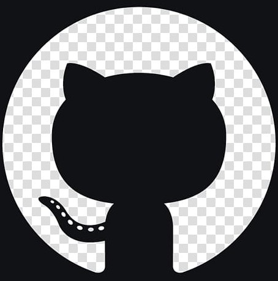

DevOps Engineer
Cloud • Docker • Kubernetes • CI/CD
Currently in 2nd year of Btech in Computer Science from GGSIPU
View My Work
I'm a Computer Science engineering student with a strong interest in full-stack development,
cloud computing, automation, and DevOps fundamentals. I enjoy building scalable, user-focused applications
and understanding how systems work behind the scenes—from writing clean code to deploying and
maintaining applications in cloud environments.
I'm naturally curious and driven by problem-solving.
Whether it's designing a web application, automating a workflow, or learning a new technology, I like
turning ideas into practical, real-world solutions. I believe good engineering is not just about code,
but about creating reliable, efficient, and impactful systems.
Beyond technical skills, I'm a confident communicator and enjoy expressing ideas clearly, collaborating with teams, and leading when needed. I'm also deeply interested in entrepreneurship and aspire to build products and teams that create meaningful value. Currently, I'm focused on strengthening my technical foundation, working on hands-on projects, and preparing for opportunities that allow me to grow as both an engineer and a future leader.
Btech
Completed project
CGPA
B.Tech in Computer Science
Guru Gobind Singh Indraprastha University
Graduating Year: 2024-28
CGPA: 8.1
PCM
Lancer's Convent Sr. School
Passing Year: 2023-24
Percentage: 83.3%
• Articulate communicator with experience presenting ideas clearly
• Demonstrated leadership through academic and project-based teamwork
• Lead Hackathon team in both the years
• Strong problem-solving mindset with a structured, analytical approach
Email: janhvigupta799@gmail.com